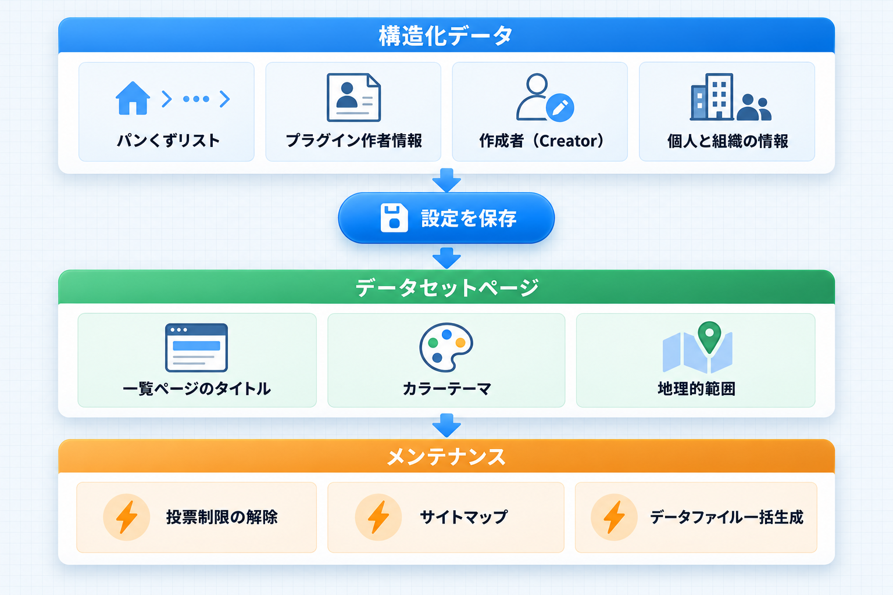
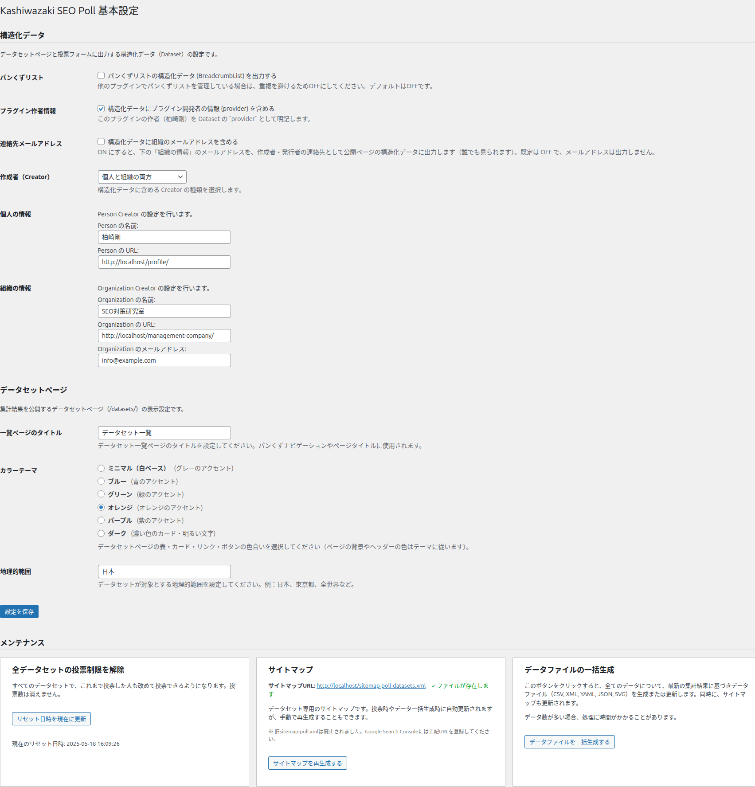
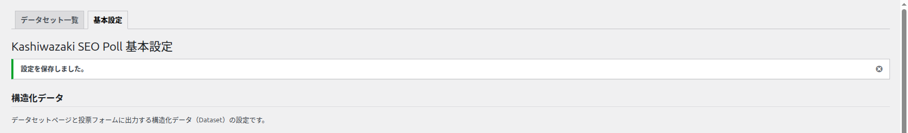
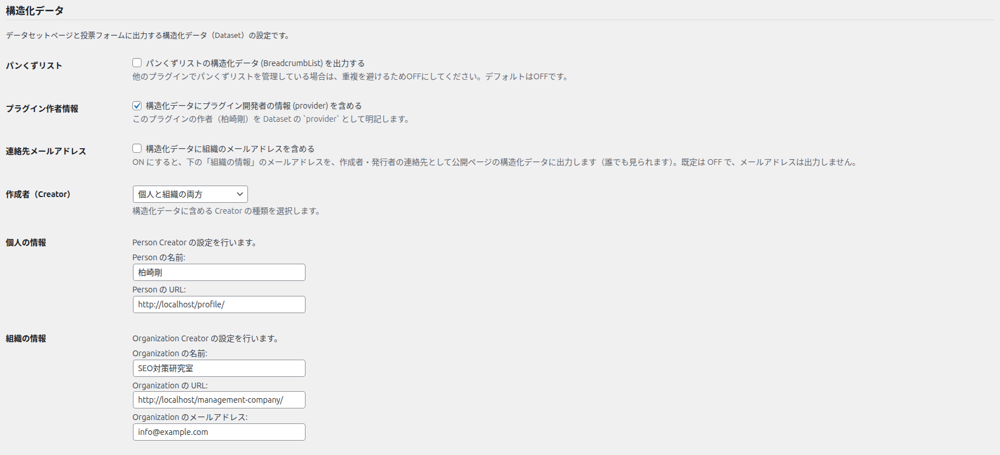
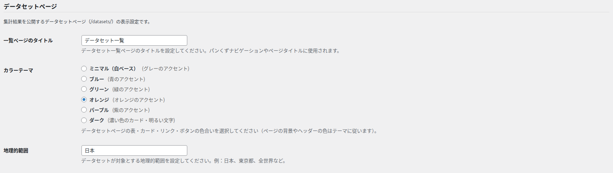
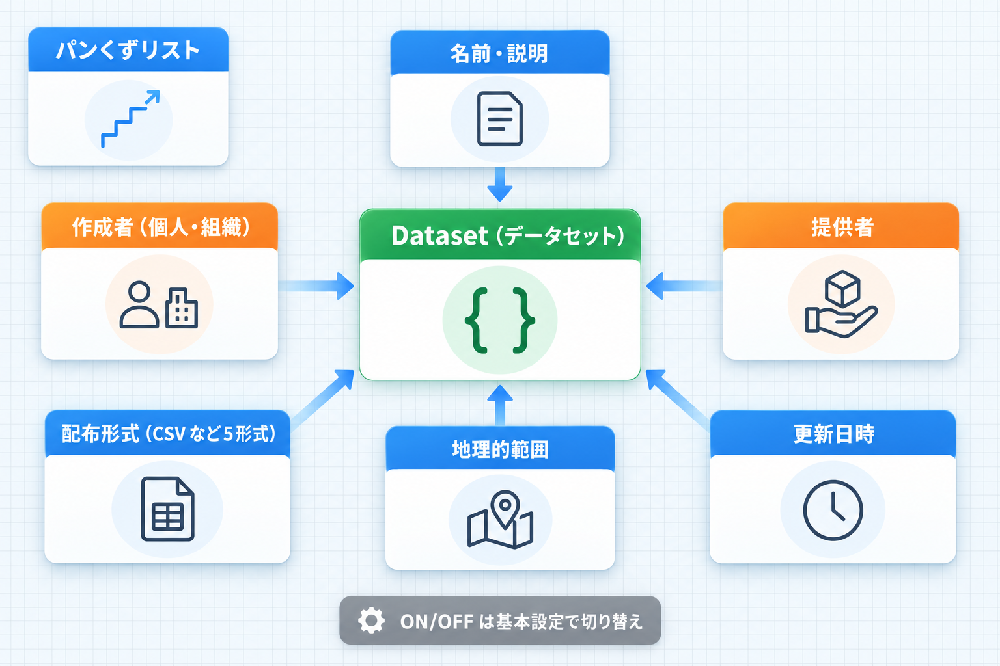

基本設定
「Kashiwazaki SEO Poll 基本設定」では、すべてのデータセットに共通する設定を行います。構造化データ（検索エンジン向けの情報）に出す作成者などの情報と、データセットページの見た目を決めます。下部の「メンテナンス」は メンテナンス で説明します。

画面の開き方と全体
左メニュー「Kashiwazaki SEO Poll」→ 上部のタブ「基本設定」、またはプラグイン一覧の「設定」リンクから開きます。サイトの設定を変更できる人（通常は管理者）だけが開けます。

| 番号 | 区画 | 内容 |
|---|---|---|
| 1 | 構造化データ | パンくずリスト、プラグイン作者情報、作成者（Creator）、個人の情報、組織の情報 |
| 2 | データセットページ | 一覧ページのタイトル、カラーテーマ、地理的範囲 |
| 3 | 設定を保存 | 1と2をまとめて保存。保存すると「設定を保存しました。」と表示されます |
| 4 | メンテナンス | 3枚のカード（メンテナンス） |

区画「構造化データ」
画面の説明: 「データセットページと投票フォームに出力する構造化データ（Dataset）の設定です。」

パンくずリスト
| 項目 | 内容 |
|---|---|
| 表示 | チェックボックス「パンくずリストの構造化データ (BreadcrumbList) を出力する」 |
| 画面の説明 | 「他のプラグインでパンくずリストを管理している場合は、重複を避けるためOFFにしてください。デフォルトはOFFです。」 |
| 既定値 | OFF |
| ON にすると | データセット一覧（2階層: サイト名 → 一覧ページのタイトル）、形式別の一覧（3階層: … → 形式名）、形式別ページ（4階層: … → データセット名）に、パンくずリストの構造化データを出力します |
| 出力しないページ | 詳細ページ（ON でも出しません） |
画面に見えるパンくずとは別です
この設定は検索エンジン向けの情報だけを出力します。ページ上に見えるパンくずリストは、テーマや別のプラグインが表示するものです。
プラグイン作者情報
| 項目 | 内容 |
|---|---|
| 表示 | チェックボックス「構造化データにプラグイン開発者の情報 (provider) を含める」 |
| 画面の説明 | 「このプラグインの作者（柏崎剛）を Dataset の `provider` として明記します。」 |
| 既定値 | OFF |
| ON にすると | 記事の投票ブロック・詳細ページ・形式別ページの構造化データに、提供者としてプラグイン作者の情報を加えます。データセット一覧のカタログ情報には加えません |
連絡先メールアドレス
| 項目 | 内容 |
|---|---|
| 表示 | チェックボックス「構造化データに組織のメールアドレスを含める」 |
| 画面の説明 | 「ON にすると、下の「組織の情報」のメールアドレスを、作成者・発行者の連絡先として公開ページの構造化データに出力します（誰でも見られます）。既定は OFF で、メールアドレスは出力しません。」 |
| 既定値 | OFF |
| ON にすると | 「組織の情報」のメールアドレスを、記事の投票ブロック・詳細ページ・形式別ページ・データセット一覧の構造化データに出力します（メールアドレスが空なら出力しません） |
| OFF のとき | メールアドレスは一切出力しません。入力したメールアドレスは消えずに残ります |
1.0.6 以前から更新した場合
更新後はこの設定が OFF になり、メールアドレスは出力されなくなります。これまでどおり出力したい場合は ON にして「設定を保存」を押してください。
作成者（Creator）
画面の説明: 「構造化データに含める Creator の種類を選択します。」 データの作成者として、誰を出力するかを選びます。
| 選択肢 | 出力される作成者 | 表示される入力欄 |
|---|---|---|
| 組織（Organization）のみ（既定） | 組織（名前・URL・問い合わせ用メールアドレス） | 組織の情報 |
| 個人（Person）のみ | 個人（名前・URL） | 個人の情報 |
| 個人と組織の両方 | 個人と組織の両方（個人が先） | 個人の情報と組織の情報 |
選び直すと、下の入力欄がその場で表示・非表示に切り替わります。画面上の見た目（記事やデータセットページの文字）は変わりません。
個人の情報
画面の説明: 「Person Creator の設定を行います。」
| 入力欄 | 既定値 | 空のとき |
|---|---|---|
| Person の名前 | 空 | 「Unknown」と出力 |
| Person の URL | 空 | サイトのトップページの URL |
組織の情報
画面の説明: 「Organization Creator の設定を行います。」
| 入力欄 | 既定値 | 空のとき |
|---|---|---|
| Organization の名前 | 有効化したときのサイト名 | サイト名。形式別ページの引用表記にも使われます |
| Organization の URL | サイトのトップページの URL | サイトのトップページの URL |
| Organization のメールアドレス | 空 | 構造化データにメールアドレスを出さない（「連絡先メールアドレス」が ON でも出さない） |
メールアドレスの公開
「連絡先メールアドレス」を ON にすると、組織のメールアドレスは作成者と発行者（publisher）の情報として、記事やデータセットページの HTML の中に構造化データで書き出され、誰でも見られます。ON にする場合は、公開してよい問い合わせ用のアドレスを設定してください。
区画「データセットページ」
画面の説明: 「集計結果を公開するデータセットページ（/datasets/）の表示設定です。」

一覧ページのタイトル
| 項目 | 内容 |
|---|---|
| 画面の説明 | 「データセット一覧ページのタイトルを設定してください。パンくずナビゲーションやページタイトルに使用されます。」 |
| 既定値 | 集計データ一覧（空で保存してもこの名前で表示） |
| 使われる場所 | /datasets/ の見出しとページタイトル、形式別の一覧の見出し（例: 「CSV 集計データ一覧」）、「〜に戻る」のリンク、パンくずリストの構造化データ |
カラーテーマ
画面の説明: 「データセットページの表・カード・リンク・ボタンの色合いを選択してください（ページの背景やヘッダーの色はテーマに従います）。」
| 選択肢 | 画面の補足 |
|---|---|
| ミニマル（白ベース）（既定） | グレーのアクセント |
| ブルー | 青のアクセント |
| グリーン | 緑のアクセント |
| オレンジ | オレンジのアクセント |
| パープル | 紫のアクセント |
| ダーク | 濃い色のカード・明るい文字 |
色が変わるのは、データセット一覧（/datasets/）のカード、詳細ページの集計表と「掲載中のページ」欄、形式別の一覧、形式別ページの一部、記事の「フォーマット別データダウンロード」のリンクです。ページの背景やヘッダー、グラフ、SVG ファイルの色は変わりません。場所ごとの詳細は データセットページ を参照してください。
おすすめ
サイトのテーマの基調色に近い色を選ぶと、データセットページがサイトになじみます。ダークは背景の濃いテーマ向けです。
地理的範囲
| 項目 | 内容 |
|---|---|
| 画面の説明 | 「データセットが対象とする地理的範囲を設定してください。例：日本、東京都、全世界など。」 |
| 既定値 | 日本（空のときも日本） |
| 使われる場所 | 記事の投票ブロック・詳細ページ・形式別ページの構造化データ（対象地域） |
構造化データとの関係

どのページに何が出力されるかは 構造化データとSEO で説明しています。
この画面で出るメッセージ
| メッセージ | 出るとき |
|---|---|
| 設定を保存しました。 | 「設定を保存」を押した後 |
| このページにアクセスする権限がありません。（WordPress 標準） | サイトの設定を変更できない人がこの画面を開いたとき |
メンテナンスのボタンで出るメッセージは メンテナンス にあります。